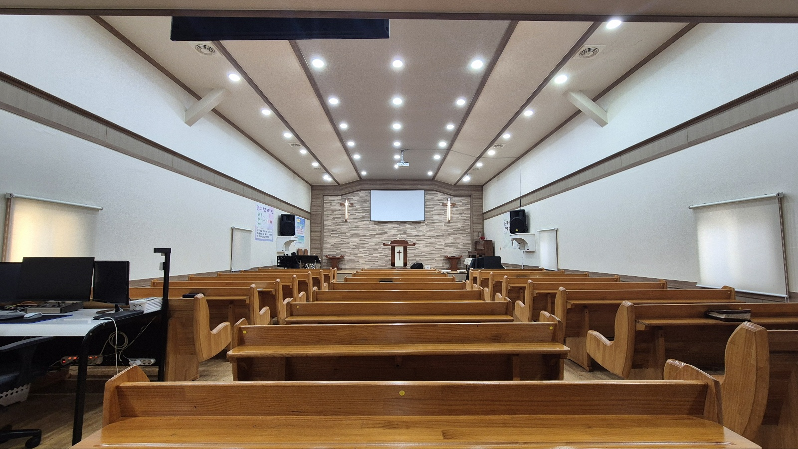
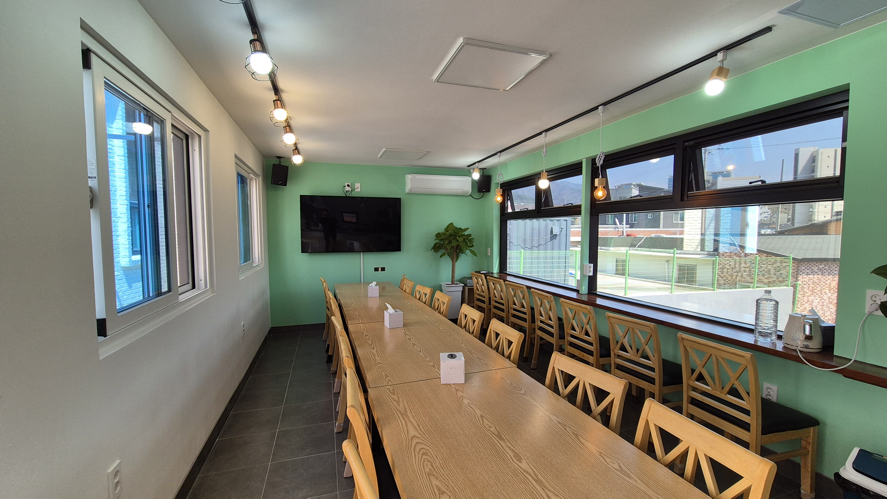
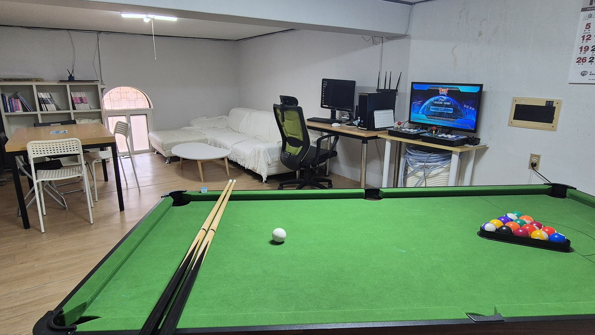
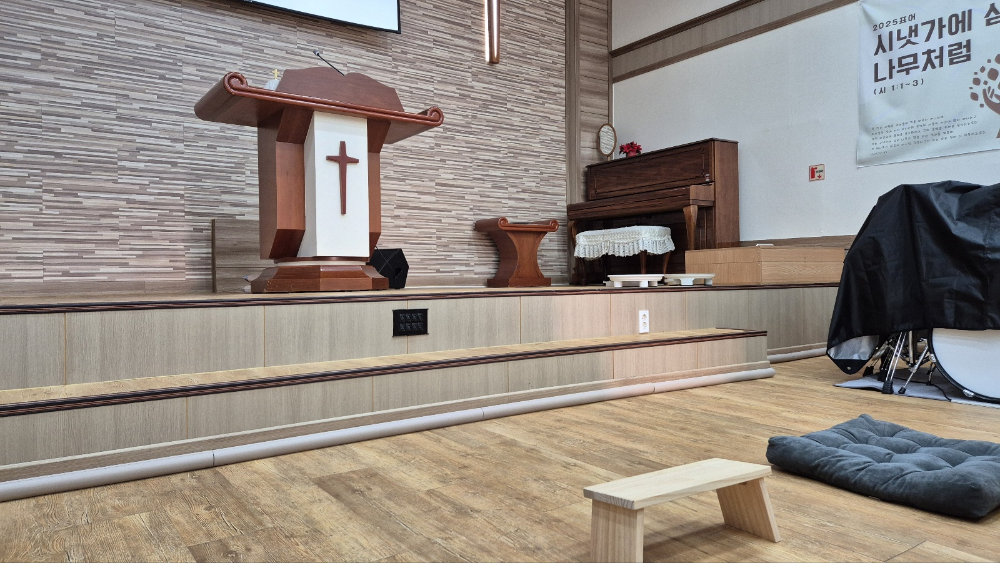
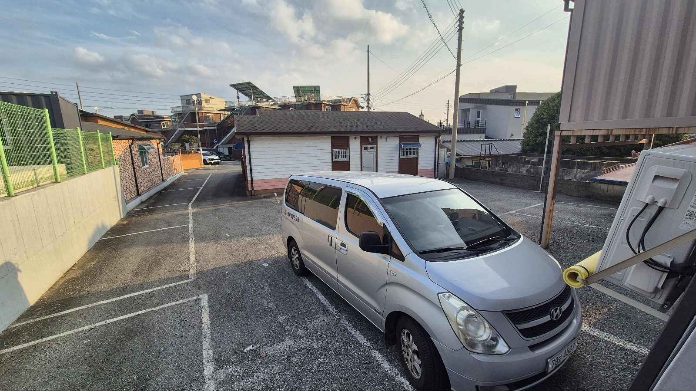

시설안내
예배와 교제를 위한 아름다운 공간입니다

본당
주일예배와 각종 집회가 열리는 거룩한 예배공간입니다. 약 80여명이 함께 예배드릴 수 있는 넓은 공간입니다.
주요 시설

친교실
성도들의 교제와 소그룹 모임이 열리는 따뜻한 공간입니다. 각종 행사와 식사 교제가 이루어지며, 언제든 식사가 가능하도록 한강라면 기계와 커피머신이 있습니다.
주요 시설

놀이터
학생들부터 장년들까지 함께 즐길 수 있는 공간입니다. PC와 오락기, 당구장 및 탁구대, 보드게임이 구비되어 있습니다.
주요 시설

기도자리
교회 본당 앞에 언제든 누구든 편하게 오셔서, 은혜로운 찬양을 들으며 기도할 수 있는 공간이 마련되어 있습니다.
주요 시설

주차장
교회를 방문하시는 모든 분들을 위한 주차공간입니다. 교회 전용 주차장 뿐만 아니라, 바로 옆 공영주차장까지 있어서, 안전하고 편리하게 주차하실 수 있습니다.
주요 시설